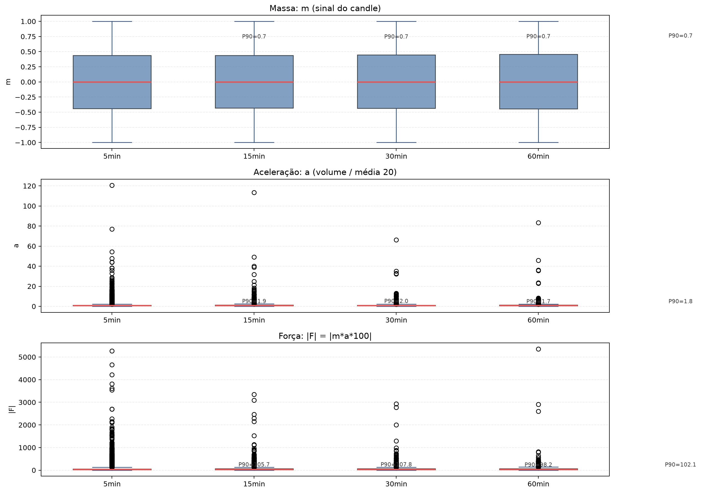
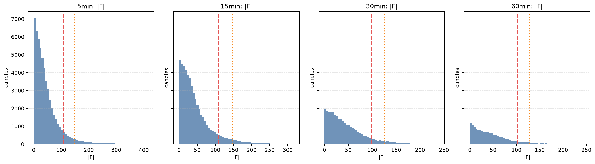
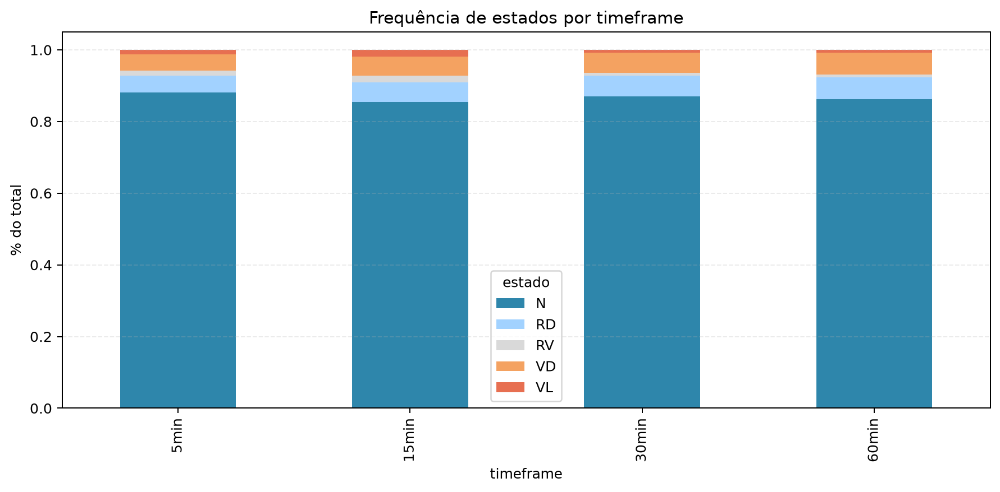
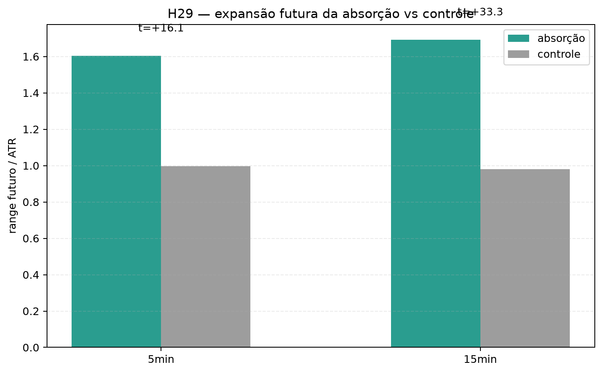
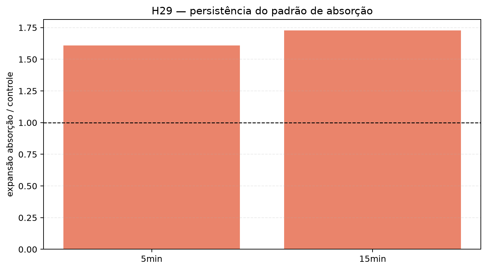
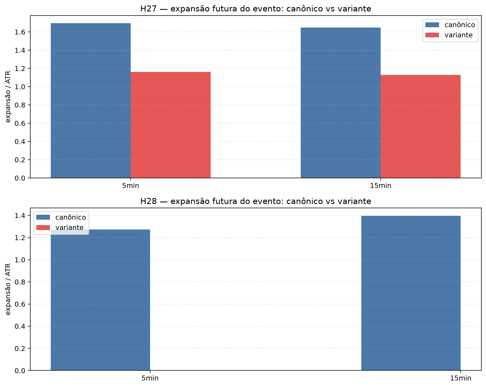
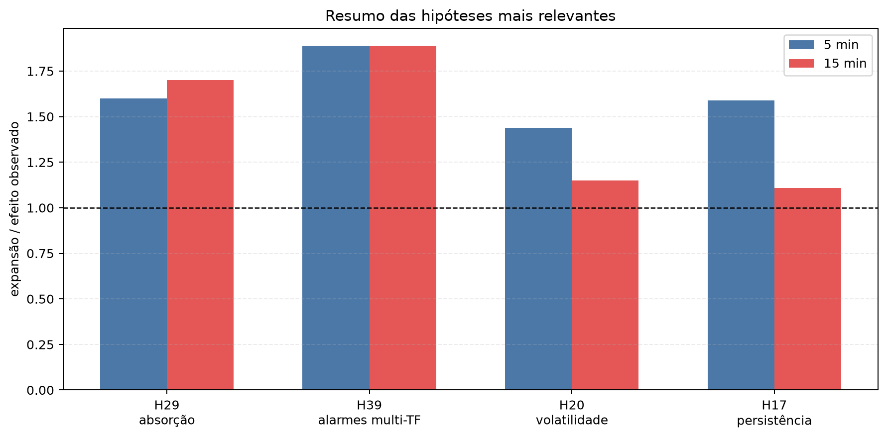

Dashboard de inspeção visual do motor por parte: massa, aceleração, força e hipóteses principais.
Uso orientativo: estas visualizações documentam o comportamento do motor e não substituem decisão operacional isolada.






